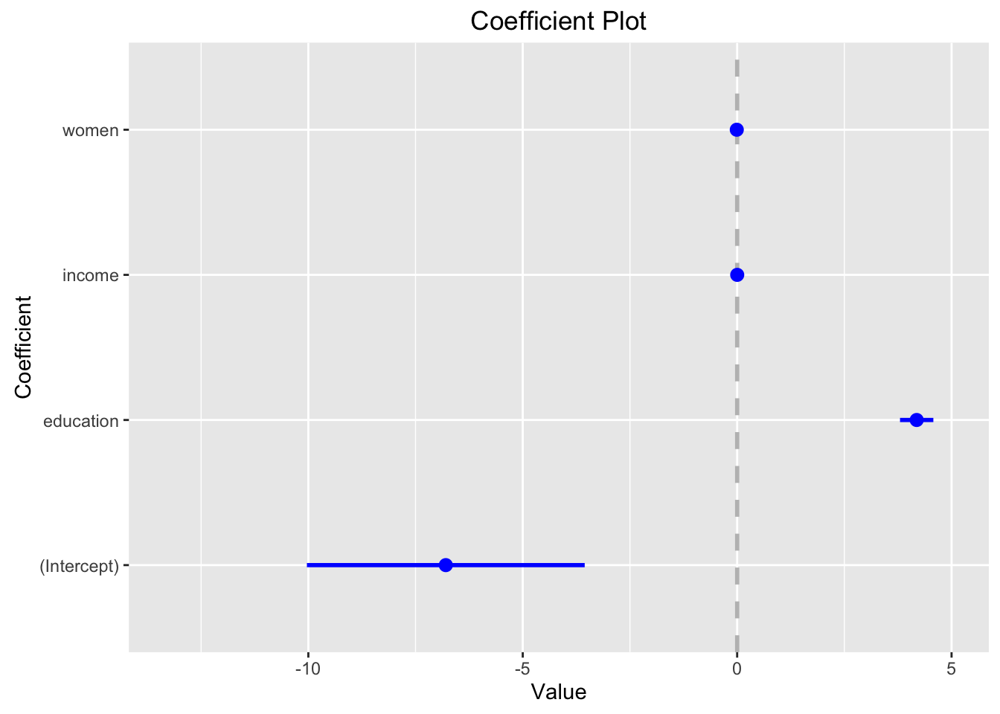

POL S/CS&SS 501, University of Washington, Winter 2016
$$ \DeclareMathOperator{\mean}{mean} \DeclareMathOperator{\var}{var} \DeclareMathOperator{\E}{E} \DeclareMathOperator{\MSE}{MSE} \DeclareMathOperator{\Bias}{Bias} \DeclareMathOperator{\SE}{se} \DeclareMathOperator{\SD}{sd} \DeclareMathOperator{\argmin}{argmin} \DeclareMathOperator{\argmax}{argmax} $$Interpreting linear regression outputs
Andreu Casas
March 4, 2016
Objective
What do the coefficients of linear regressions mean? Or the standard errors and p-values? How can we use them to make predictions? How can we compare the coefficients for different covariates? How can we present linear regression results in papers?
Introduction
In this lab we’ll use the Prestige dataset we already used in the previous lab. Since some of you were having some issues downloading the car package, we decided to include the dataset in the package for this course (uwpols501). Use the install_github() function from the devtools package to update the package. Load also the rest of the packages that we’ll use in this lab.
library(devtools)
install_github(username = "jrnold", repo = "UW-POLS501/r-uwpols501")library(uwpols501)
data("Prestige")
library(broom)
library(dplyr)
library(coefplot)Fitting a linear regression
Let’s begin by fitting a linear model with prestige as dependent variable and education, income, and women as covariates; and pull the coefficients table from the regression output using the tidy() function of the broom package.
reg <- lm(prestige ~ education + income + women, data = Prestige)
reg_table <- tidy(reg)
reg_table## term estimate std.error statistic p.value
## 1 (Intercept) -6.794334203 3.2390886463 -2.0976067 3.851306e-02
## 2 education 4.186637275 0.3887012613 10.7708353 2.590069e-18
## 3 income 0.001313560 0.0002777812 4.7287593 7.579372e-06
## 4 women -0.008905157 0.0304070576 -0.2928648 7.702447e-01Challenge
What’s the meaning of all the variables in the regression table?
term: the name of the covariates (also known as independent-control variables, explanatory variables, predictors, etc.).estimate: the coefficient for each covariate. The average effect (rate of change) that a unit change of that covariate has on the dependent variable. The effect (coefficients) is in the units of the dependent variable.std.error: the standard error is the standard deviation of the coefficient. In other words, it describes the uncertainty associated with the estimate. We use the standard errors to compute Confidence Intervals for the coefficients: \(coef \pm t_{df} SE_{coef}\). The critical value \(t_{df}\) depends on the desired confidence level and the degrees of freedom of the model: usually 1.96 (or 2).statistic: t-test statistic. How far away (how many standard deviations away) from the null value the coefficient is. \(T = \dfrac{coefficient - null value}{SE}\). Since in this case the null value is 0 and the standard deviation of the coefficient is the standard error, we obtain the t-statistic by calculating: \(T = \dfrac{coefficient}{SE}\).p.value: the probabilty of observing a coefficient if the null hypothesis were true.
Interpreting regression tables
Let’s focus on the regression output for the covariate education.
edu_reg <- filter(reg_table, term == 'education')
edu_reg## term estimate std.error statistic p.value
## 1 education 4.186637 0.3887013 10.77084 2.590069e-18Challenge
In which units are the independent variable prestige and the covariate education represented? What’s their range?
The outcome variable prestige is measured using the Pineo-Porter prestige score for occupation, with range {14.80 , 87.20}. The independent variable education is measured in years (average years of education), with range {6.3 , 15.9}. The regression coefficient for education is 4.18 and the coefficient SE is 0.39.
This means that, when education increases by 1 unit (so when the average education of people with certain occupation increase 1 year), prestige increases 0.39 units (so the Pineo-Porter prestige scores increases +0.39). For example, let’s take a look at the first observation in the dataset Prestige to see more clearly how we should interpret this result.
Prestige[1,]## education income women prestige census type
## gov.administrators 13.11 12351 11.16 68.8 1113 profThe first occupation in the dataset Prestige is gov.administrators, with an average of 13.11 years of education and an average Pineo-Porter prestige score of 68.8. Using the education coefficient of the model, we should predict that if gov.administrators were to increase their average years of education by 1 year, the expected Pineo-porter score would increase by 4.18. Let’s use the coefficients in the model to predict the prestige score for gov.administrators with an education value of 13.11 and 14.11, and then compare them.
gov_admin1 <- Prestige[1,]
gov_admin2 <- Prestige[1,] %>%
mutate(education = education + 1)
newdata <- bind_rows(gov_admin1, gov_admin2)
gov_admin_pred <- predict(reg, newdata)
gov_admin_pred## 1 2
## 64.21688 68.40352gov_admin_pred[1] - gov_admin_pred[2]## 1
## -4.186637We can calculate confidence intervals around those estimates using the standard error (0.39) of the coefficient (4.18).
The hard way:
cf <- edu_reg$estimate
coef_upr <- cf + 1.96 * edu_reg$std.error
coef_lwr <- cf - 1.96 * edu_reg$std.error
c(coef_lwr, cf, coef_upr)## [1] 3.424783 4.186637 4.948492c(gov_admin_pred[1] + coef_lwr, gov_admin_pred[1] + cf, gov_admin_pred[1] + coef_upr)## 1 1 1
## 67.64167 68.40352 69.16538Comparing the effect of all the covariates
These are not standardized. Look for an existing package to do so.
coefplot(reg)

This work is licensed under a Creative Commons Attribution-NonCommercial-ShareAlike 4.0 International License. R code is licensed under a BSD 2-clause license.